<!DOCTYPE html>
<html>
<head>
	<title>Marker</title>
	<meta charset="utf-8">
	<link rel="stylesheet" type="text/css" href="asset/leaflet/leaflet.css">
	<script src="asset/leaflet/leaflet.js"></script>
	<script src="json/keclombok.js"></script>
	<style>
		html, body {
			height: 100%;
			width: 100%;
			margin:0;
			padding: 0;
		}
		#map {
			width: 100%;
			height:100%;
		}
		.leaflet-popup-content {
			width:auto !important;
		}

	</style>
</head>
<body>
<div id="map"></div>
<script>

	
	// Membuat Icon Pada Peta 
	
	var mapIcon = L.Icon.extend({
	    iconSize:     [32, 37]
	});
	var masjidIcon = new mapIcon({iconUrl: 'icon/mosquee.png'}),
	    pasarIcon = new mapIcon({iconUrl: 'icon/market.png'}),
	    sekolahIcon = new mapIcon({iconUrl: 'icon/school.png'});
	    kesehatanIcon = new mapIcon({iconUrl: 'icon/hospital-building.png'});
	    kantorcamatIcon = new mapIcon({iconUrl: 'icon/office-building.png'});
	    tamanbermainIcon = new mapIcon({iconUrl: 'icon/garden.png'});
	    pemerintahanIcon = new mapIcon({iconUrl: 'icon/congress.png'});
	    keamananIcon = new mapIcon({iconUrl: 'icon/police.png'});
	    bendunganIcon = new mapIcon({iconUrl: 'icon/river-2.png'});

	
	// Mendeklarasikan Marker Masjid dan membuatnya menjadi 
	// Layer Group
	
	
	var mj1 = L.marker([-8.70255, 116.26714],{icon: masjidIcon}).bindPopup('Masjid Agung Praya');
	var mj2 = L.marker([-8.71077, 116.27883],{icon: masjidIcon}).bindPopup('Masjid Jami');
	var mj3 = L.marker([-8.6965725, 116.2826282],{icon: masjidIcon}).bindPopup('Masjid Al-Istikomah');
	var mj4 = L.marker([-8.6981617, 116.2854233],{icon: masjidIcon}).bindPopup('Masjid Darul Mutaqin');

	var masjid = L.layerGroup([mj1, mj2, mj3, mj4]);

	
	// Mendeklarasikan Marker Sekolah dan membuatnya menjadi 
	// Layer Group
	
	var sk1 = L.marker([-8.69835, 116.28224],{icon: sekolahIcon}).bindPopup('STMIK Lombok');
	var sk2 = L.marker([-8.69777, 116.28200],{icon: sekolahIcon}).bindPopup('YANMU Praya');

	var sekolah = L.layerGroup([sk1, sk2]);

	
	// Mendeklarasikan Marker Pasar dan membuatnya menjadi 
	// Layer Group
	
	var psr1 = L.marker([-8.69415, 116.26584],{icon: pasarIcon}).bindPopup("Pasar Renteng ");
	var psr2 = L.marker([-8.71188, 116.28291],{icon: pasarIcon}).bindPopup("Karang Bualayak ");

	var pasar = L.layerGroup([psr1, psr2]);

	//kantor camat//
	var kacamat1 = L.marker([-8.6128812, 116.3103311],{icon: kantorcamatIcon}).bindPopup("kantor camat batukliang 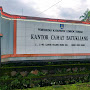");
	var kacamat2 = L.marker([-8.588949, 116.3245473],{icon: kantorcamatIcon}).bindPopup('kantor camat batukliang Utara');
	var kacamat3 = L.marker([-8.6942821, 116.3995881],{icon: kantorcamatIcon}).bindPopup("kantor camat janapria 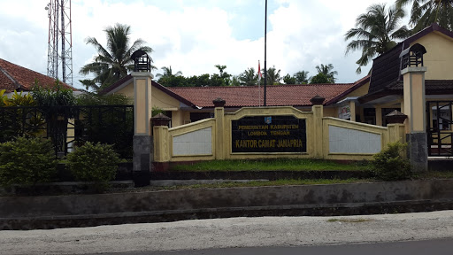");
	var kacamat4 = L.marker([-8.6525193, 116.1979991],{icon: kantorcamatIcon}).bindPopup("kantor camat jonggat 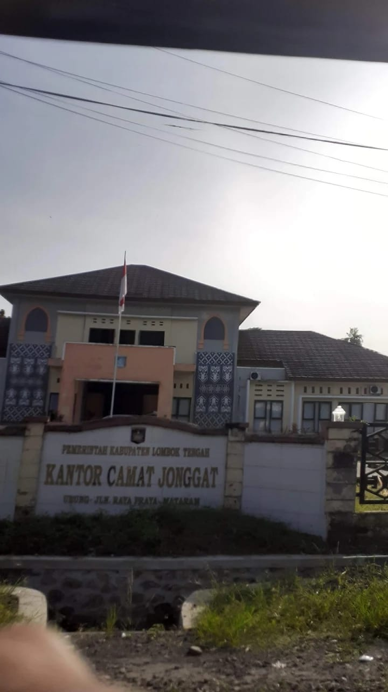");
	var kacamat5 = L.marker([-8.6343426, 116.3548378],{icon: kantorcamatIcon}).bindPopup("kantor camat kopang 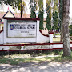");
	var kacamat6 = L.marker([-8.7237617, 116.2390471],{icon: kantorcamatIcon}).bindPopup("kantor camat praya 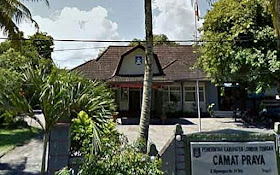");
	var kacamat7 = L.marker([-8.742301, 116.2410837],{icon: kantorcamatIcon}).bindPopup("kantor camat praya barat 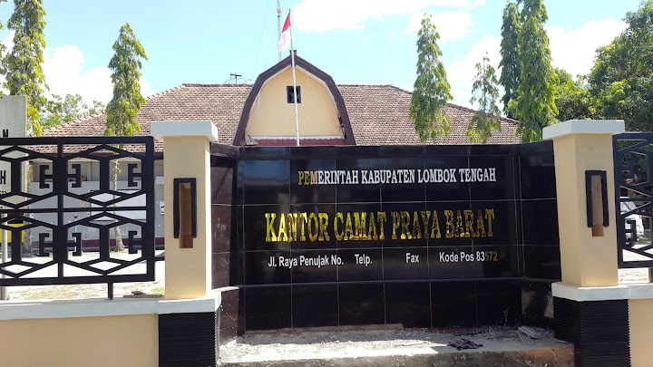");
	var kacamat8 = L.marker([-8.7385415,116.2015728],{icon: kantorcamatIcon}).bindPopup('kantor camat praya barat Daya');
	var kacamat9 = L.marker([-8.7340447, 116.316331],{icon: kantorcamatIcon}).bindPopup("kantor camat praya tengah 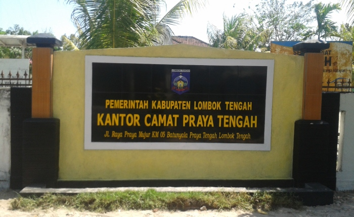");
	var kacamat10 = L.marker([-8.7614541, 116.3561055],{icon: kantorcamatIcon}).bindPopup("kantor camat praya timur 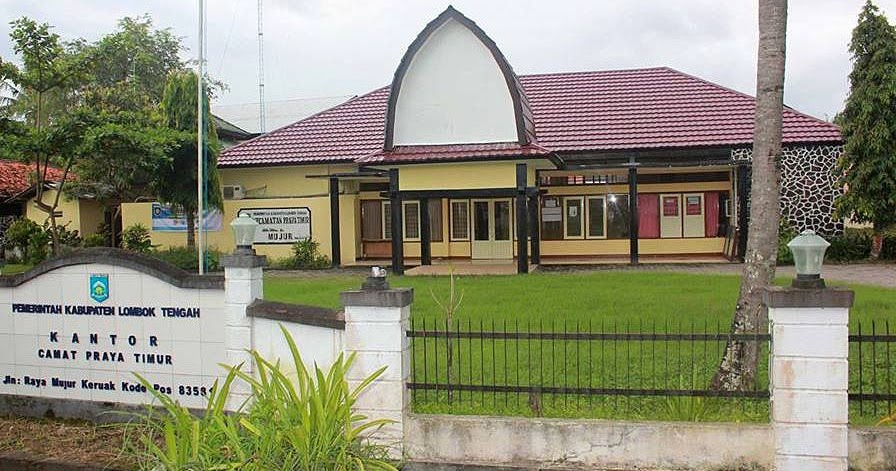");
	var kacamat11 = L.marker([-8.6190565, 116.2517066],{icon: kantorcamatIcon}).bindPopup("kantor camat pringgarata 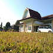");
	var kacamat12 = L.marker([-8.8004563, 116.292598],{icon: kantorcamatIcon}).bindPopup("kantor camat pujut 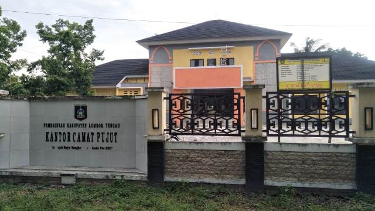");

	var kantorcamat = L.layerGroup([kacamat1, kacamat2, kacamat3, kacamat4, kacamat5, kacamat6, kacamat7, kacamat8, kacamat9, kacamat10, kacamat11, kacamat12,]);


	//rumah sakit/kesehatan//
	var kesehatan1 = L.marker([-8.7019832, 116.2958626],{icon: kesehatanIcon}).bindPopup("RSUD Praya 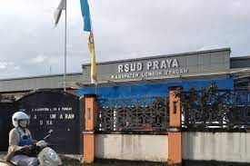");
	var kesehatan2 = L.marker([-8.7060444, 116.2726082],{icon: kesehatanIcon}).bindPopup("puskesmas praya ");

	var pusatkesehatan = L.layerGroup([kesehatan1, kesehatan2]);

	//taman bermain

	var taman1 = L.marker([-8.7045539, 116.2712998],{icon: tamanbermainIcon}).bindPopup("Alun alun Tastura ");
	var taman2 = L.marker([-8.7139106, 116.2869397],{icon: tamanbermainIcon}).bindPopup("Taman Biao ");
	var taman3 = L.marker([-8.7141343, 116.2639882],{icon: tamanbermainIcon}).bindPopup("Tonjeng beru smart garden 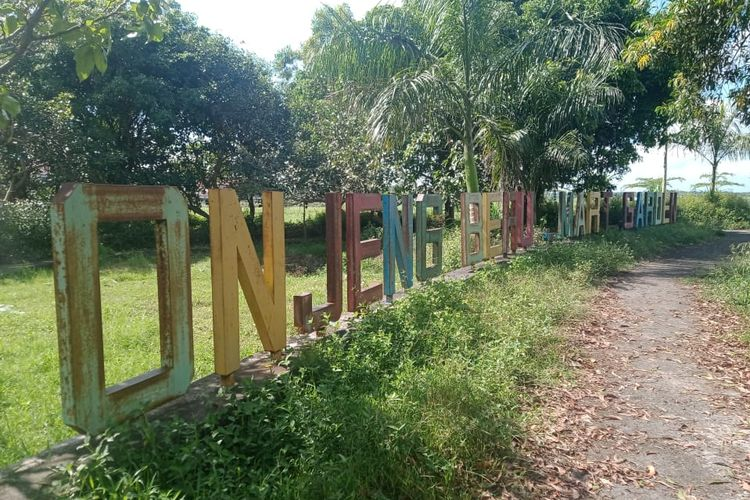"); 
	var tamanbermain = L.layerGroup([taman1, taman2, taman3]);

	//pemerintahan

	var kantorpemerintah1 = L.marker([-8.7061917, 116.2691035],{icon: pemerintahanIcon}).bindPopup("kantor bupati lombok tengah ");
	var kantorpemerintah2 = L.marker([-8.6884876, 116.3207126],{icon: pemerintahanIcon}).bindPopup('Kantor PDE Arsip Dan Dokumentasi');
	var kantorpemerintah = L.layerGroup([kantorpemerintah1, kantorpemerintah2]);

	//keamanan
	var keamanan1 = L.marker([-8.7093713, 116.2793799],{icon: pemerintahanIcon}).bindPopup("polres lombok tengah 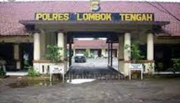");
	var keamanan2 = L.marker([-8.7242459, 116.1946606],{icon: pemerintahanIcon}).bindPopup('Polsek praya barat');
	var keamanan3 = L.marker([-8.7316054, 116.0706794],{icon: pemerintahanIcon}).bindPopup("polsek praya barat daya 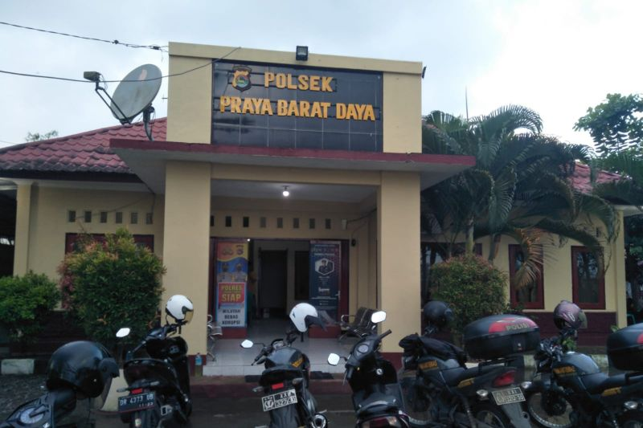");
	var keamanan4 = L.marker([-8.7963644, 116.2862194],{icon: pemerintahanIcon}).bindPopup("polsek pujut 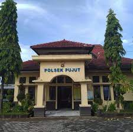");

	var kantorpolisi = L.layerGroup([keamanan1, keamanan2, keamanan3, keamanan4]);

	//waduk
	var waduk1 = L.marker([-8.7320897, 116.2726254],{icon: bendunganIcon}).bindPopup("Bendungan batujai ");
	var waduk2 = L.marker([-8.7575494, 116.1880415],{icon: bendunganIcon}).bindPopup("Bendungan pengge ");

	var bendungan= L.layerGroup([waduk1, waduk2]);


//var popupRenteng = "";


	
	// Membuat BaseMap Pada Peta
	

	var mbAttr = 'Map data &copy; <a href="https://www.openstreetmap.org/">OpenStreetMap</a> contributors, ' +
			'<a href="https://creativecommons.org/licenses/by-sa/2.0/">CC-BY-SA</a>, ' +
			'Imagery © <a href="https://www.mapbox.com/">Mapbox</a>',
		mbUrl = 'https://api.tiles.mapbox.com/v4/{id}/{z}/{x}/{y}.png?access_token=pk.eyJ1IjoibWFwYm94IiwiYSI6ImNpejY4NXVycTA2emYycXBndHRqcmZ3N3gifQ.rJcFIG214AriISLbB6B5aw';

	var streets  = L.tileLayer(mbUrl, {id: 'mapbox.streets',   attribution: mbAttr});

	
	// Mendeklarasikan Peta kedalam Id Map
	
	var map = L.map('map', {
		center: [-8.6416479, 116.3522657],
		zoom: 11,
		layers: [streets]
	});

	
	// Mendeklarasikan BaseLayer Pada Map yakni Street
	
	var baseLayers = {
		"Streets": streets

	};
	var batukliangutara = L.geoJSON([btklu], {
		style:function(feature){
			return feature.properties && feature.properties.style;
		}
	});
	var batukliang = L.geoJSON([btkl], {
		style:function(feature){
			return feature.properties && feature.properties.style;
		}
	});
	var kopang = L.geoJSON([kpg], {
		style:function(feature){
			return feature.properties && feature.properties.style;
		}
	});
	var janapria = L.geoJSON([jnp], {
		style:function(feature){
			return feature.properties && feature.properties.style;
		}
	});
	var jonggat = L.geoJSON([jgt], {
		style:function(feature){
			return feature.properties && feature.properties.style;
		}
	});

	var pringarata = L.geoJSON([pggt], {
		style:function(feature){
			return feature.properties && feature.properties.style;
		}
	});
	var praya = L.geoJSON([praya], {
		style:function(feature){
			return feature.properties && feature.properties.style;
		}
	});
	var prabarda = L.geoJSON([prabarda], {
		style:function(feature){
			return feature.properties && feature.properties.style;
		}
	});
	var prabar = L.geoJSON([prabar], {
		style:function(feature){
			return feature.properties && feature.properties.style;
		}
	});

	var prateng = L.geoJSON([prateng], {
		style:function(feature){
			return feature.properties && feature.properties.style;
		}
	});
	var pratim = L.geoJSON([pratim], {
		style:function(feature){
			return feature.properties && feature.properties.style;
		}
	});
	var pujut = L.geoJSON([pjt], {
		style:function(feature){
			return feature.properties && feature.properties.style;
		}
	});
	
	// Deklarasi untuk memilih Icon yang akan ditampilkan
	
	var overlays = {
		"Masjid": masjid,
		"Sekolah": sekolah,
		"Pasar" : pasar,
		"kantor camat" : kantorcamat,
		"pusat kesehatan" : pusatkesehatan,
		"taman bermain" : tamanbermain,
		"kantor pemerintah" : kantorpemerintah,
		"kantor polisi" : kantorpolisi,
		"waduk bendungan" : bendungan,

		
		// Kecamatan
		"Kec. Batukliang Utara": batukliangutara,
		"Kec. Batuklaiang": batukliang,
		"Kec. Kopang": kopang,
		"Kec. Janapria": janapria,
		"Kec. Pringarata": pringarata,
		"Kec. Jonggat": jonggat,
		"Kec. Praya": praya,
		"Kec. Praya Barat Daya": prabarda,
		"Kec. Praya Barat": prabar,
		"Kec. Praya Tengah": prateng,
		"Kec. Praya Timur": pratim,
		"Kec. Pujut": pujut,
	};

	
	// Menambah  variabel baselayaer dan overlay kedalam map
	
	L.control.layers(baseLayers, overlays).addTo(map);

	
	// Menbambil data geospesial wilayak kecamatan praya
	
	L.geoJSON([btskab], {
		style: function (feature) {
			return feature.properties && feature.properties.style;
		}
	}).addTo(map);
</script>
</body>
</html>